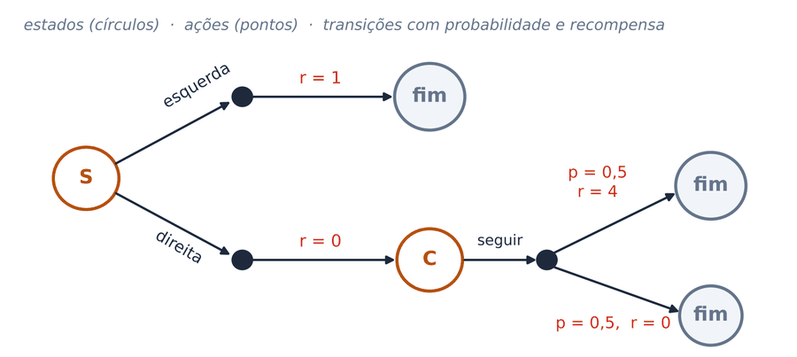

Valor, Bellman e o erro de diferença temporal. Identifique-se abaixo, faça cada atividade quando o professor pedir e toque em Enviar — sua resposta fica registrada e o gabarito aparece em seguida.
Atividade 1 · 6 min · individual
Recompensas a partir de agora: −1, −1, −1, +10 (custo por passo, comida no 4º passo). G = r₁ + γ·r₂ + γ²·r₃ + γ³·r₄
aCalcule G com γ = 0,9.
bE com γ = 0,5?
cEscolha: 1 agora ou 5 daqui a três passos (vale 5γ³). Com γ = 0,5, qual vale mais? A partir de que γ as duas se igualam?
dTarefa sem fim: r = 1 a cada passo, para sempre, γ = 0,9. Quanto vale G?
Atividade 2 · 7 min · em duplas

V(s) = Σ π(a|s) Σ P(s′|s,a)·[r + γ·V(s′)] · para V*, troque a média sobre ações pelo máximo.
aQuanto vale V(C)? E Q(S, direita)?
bPolítica aleatória (0,5 para cada lado): quanto vale Vπ(S)?
cQuanto vale V*(S), e qual é a ação ótima em S?
dAbaixo de que γ a esquerda passa a ser a melhor?
Atividade 3 · 7 min · em duplas, no papel
Corredor s₁ – s₂ – s₃ – G. Ações: esquerda ou direita (na parede, fica). Cada passo custa −1; entrar em G rende +10 (e acaba). γ = 0,9; V₀ = 0. V(s) ← maxₐ [r + γ·V(s′)], usando os valores da iteração anterior.
aIteração 1: V(s₃) e V(s₂)?
bIteração 2: V(s₂) e V(s₁)?
cIteração 3: V(s₁)? A iteração 4 muda algo?
dAção ótima em s₁, e quantos passos até G?
Atividade 4 · 7 min · individual
Primeiro jogue: quatro máquinas pagam 1 ponto com probabilidades que você não conhece. Você e o UCB1 jogam 30 vezes, cada um na sua cópia das máquinas.
aε-guloso com ε = 0,1 e 3 braços (ao explorar, sorteia entre os 3). Com que probabilidade escolhe o braço de maior Q?
bSoftmax P(a) ∝ exp(Q(a)/τ) com τ = 0,5, Q₁ = 1 e Q₂ = 0. Probabilidade de escolher o braço 1?
cUCB1 na jogada t = 10: A tem Q = 0,5 com N = 8; B tem Q = 0,4 com N = 2. Calcule Q + √(2·ln t / N) de B. Qual braço o UCB1 escolhe?
dPor que o UCB1 testa cedo todas as máquinas?
Atividade 5 · 7 min · individual
Cadeia s₁ → s₂ → s₃ → fim, r = 1 só ao sair de s₃. γ = 1, α = 0,5, V = 0 no início. δ = r + γ·V(s′) − V(s), V(s) ← V(s) + α·δ. No Monte Carlo: V(s) ← V(s) + α·(G − V(s)).
aEpisódio 1, por TD(0): V(s₃) e V(s₁)? Por Monte Carlo: V(s₁)?
bEpisódio 2, por TD(0): δ na passagem s₂ → s₃ e δ na saída de s₃.
cOito episódios observados: A → B → fim (recompensas 0, 0); seis vezes B → fim (1); uma vez B → fim (0). Qual o V(B)? E V(A) pelo MC e pelo TD?
dQual das respostas para V(A) usa a propriedade de Markov?
Atividade 6 · 6 min · individual
aUma pista prevê suco (r = 1) com p = 0,5. Aprendido, V(pista) = 0,5 (γ = 1; a pista chega sem aviso, o valor antes dela é 0). Calcule δ na pista, no suco e na omissão.
Modelo de Redish (2004) para drogas que liberam dopamina: δ = max(r + γ·V(s′) − V(s) + D, D), com D = 0,3, γ = 1 e V(s′) = 0 (fim).
bCom V(s) = 1: δ da recompensa natural (r = 1, D = 0) e δ da droga (r = 1, D = 0,3)?
cCom a droga, depois de muitas exposições, V(s) = 5. Quanto vale δ? O que acontece com V?
dNo ator–crítico dos gânglios da base, onde fica cada papel?
Atividade 7 · 4 min · individual · opcional
C = computacional (o quê e por quê) · A = algorítmico (como) · I = implementação (com quê)
bSegundo Rolls (2023), cada propriedade é da dopamina (D) ou do orbitofrontal (O)?